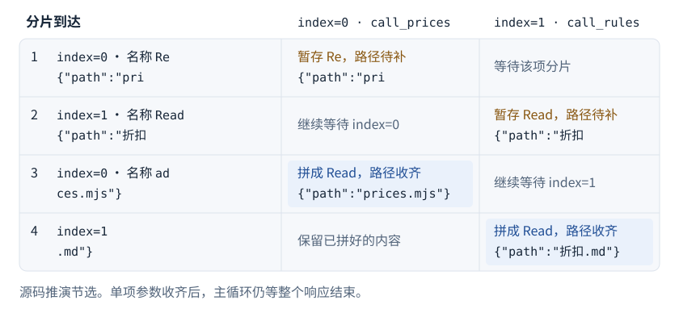
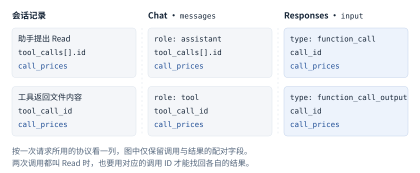

模型响应怎样变成调用
流式分片、参数拼接与历史投影
第一段只带来了 {"path":"pri。这时就解析参数，会把一次正常的 Read 判成坏请求。跟着两份交错的文件读取请求，从分片走到工具执行，再看结果怎样进入下一轮。
两次 Read 的参数怎样各自拼好？
1.1 四段交错分片按 index 归位
假设当前就在价格模块。模型先读 prices.mjs 和同目录下的 折扣.md，再判断普通价该改哪里。服务端把一个回答分几次发过来，这叫流式响应。每次发来的变化叫增量，接口里用 delta 表示。
下面四行只取与工具有关的分片。index 标记本轮响应里的第几项调用，RuoCun 按它把分片交给各自的累积位置。从第一行往下读，轮到同一个 index 再续上那一项。

看着图判断。第三段到达后，哪个位置已经拼出完整路径？这个时候可以启动它的 Read 吗？
核对两处
index=0 拼出工具名 Read 和 {"path":"prices.mjs"}，index=1 还缺 .md"}。这时整个响应仍在接收，主循环会等到本轮取得完整响应，再检查并派发工具。
四段都到了，累积器才有下面这些信息。第一篇已经用调用 ID 配好了工具回包。这里在它前面多了一层：零散的字段先按 index 找到同一项调用，拼好后留下 id 供后续配对。arguments 在助手消息里仍是字符串，所以外层 JSON 中的引号要转义。稍后工具校验才把它读成对象。
[
{"id":"call_prices","type":"function","function":{"name":"Read","arguments":"{\"path\":\"prices.mjs\"}"}},
{"id":"call_rules","type":"function","function":{"name":"Read","arguments":"{\"path\":\"折扣.md\"}"}}
]字节解码与 SSE 分帧
2.1 UTF-8 增量解码保留未收齐的字节
图 1 直接展示了解析后的四段。回到前一步，连接给客户端的是一块块字节，折这个字也可能跨两块。它在 UTF-8 里是 E6 8A 98。下面只展示图 1 第二段的一小截。
网络块 A 的末尾 … E6 8A
网络块 B 的开头 98 E6 89 A3 …把 A 单独当成一份 UTF-8 文本，末尾的折字缺字节。RuoCun 把同一个严格增量解码器留在整个流里。它先输出已经收齐的字符，暂存 E6 8A，等 B 开头的 98 再还原折字。若流结束时仍缺这一个字节，flush() 会报告解码错误。
def __init__(self) -> None:
self._decoder = codecs.getincrementaldecoder("utf-8")("strict")
def feed(self, chunk: bytes) -> str:
return self._decoder.decode(chunk, final=False)
def flush(self) -> str:
return self._decoder.decode(b"", final=True)2.2 SSE 按空行分帧，再提取 data
SSE 是服务端在一条连接上连续发事件的文本格式。这个客户端通常先找空行切出事件，再取各条 data: 后的内容。下面展开图 1 第二段的外层事件。末尾的空行表示这条事件收齐了。
data: {"choices":[{"delta":{"tool_calls":[{"index":1,"id":"call_rules","function":{"name":"Read","arguments":"{\"path\":\"折扣"}}]}}]}
一块字节里可以有两条事件，也可能只有半条。解码后的半条文本放回 _buffer，等下一块补齐。正常流结束时，flush() 会尝试处理尾部，例如最后一个数据行后省了空行的情况。
def parseSSEChunk(buffer: str) -> SSEParseResult:
normalized = buffer.replace("\r\n", "\n")
parts = normalized.split("\n\n")
rest = parts.pop() if parts else ""
payloads: list[str] = []
for event in parts:
for line in event.split("\n"):
if line.startswith("data:"):
payloads.append(line[len("data:"):].strip())
return SSEParseResult(payloads=payloads, rest=rest)处理事件时还有两层 JSON。data: 后的外层 JSON 已能解析，里面的 function.arguments 却只是 {"path":"折扣，仍要等后续分片。Chat 累积器跳过无法解析的外层事件数据，收到有 error 的事件会报错。参数在完整响应之后走自己的校验路径。
try:
parsed: Any = json.loads(payload)
except json.JSONDecodeError:
return [] # 忽略该条不可解析的 SSE 数据。
if not isinstance(parsed, dict):
return []
error = parsed.get("error")
if error is not None:
raise SseError(f"SSE error from API: {error}")
usage = parsed.get("usage")流式预览与工具派发的分界
3.1 index 管分组，id 管结果配对
第一个 index=0 分片到手时，暂存的名字是 Re。第三段同样带 index=0，即使没再给 ID，程序也会在原来的条目里补上 ad 和后半段路径。下次发请求时，id=call_prices 派上用场，程序用它把工具结果对应到这次调用。两个 Read 的名字最终一样，调用身份仍然各自独立。
raw_index = frag.get("index")
index = raw_index if isinstance(raw_index, int) else 0
acc = self.tool_acc.setdefault(
index, {"id": "", "name": "", "args": ""})
frag_id = frag.get("id")
if isinstance(frag_id, str) and frag_id:
acc["id"] = frag_id # 保留之前取得的有效 ID。
function = frag.get("function")
if isinstance(function, dict):
name = function.get("name")
if isinstance(name, str):
acc["name"] += name
arguments = function.get("arguments")
if isinstance(arguments, str):
acc["args"] += arguments
if acc["name"] and index not in self.announced:
self.announced.add(index)
out.append({"kind": "tool_call", "index": index, "name": acc["name"]})遇到非空 ID，累积器记录这个值。名字和参数则追加字符。正文和推理文字也各自累加。名字首次变成非空时，程序就可以发一条 tool_call 增量给界面，因此界面可能先拿到 Re。结束时，buildMessage() 按数字位置排序，组装最终的助手调用列表。要判断实际执行了什么，应跟着后面的完整调用和工具结果看。
3.2 第一项参数齐了，为什么还要等整轮响应？
假设图 1 第三段刚到，第一项已经能拼成 Read({"path":"prices.mjs"})，第二项还差半截。此时就启动第一项，确实能省一点等待。可如果连接紧接着断开，接收层会把本轮报为未完成，第一项操作却已经发生。换成写文件，停止接收也撤不回已经写入的内容。
RuoCun 让累积器把增量先交给界面，由主循环检查整轮响应。明确断流且已有增量时，客户端可以返回 partial。主循环保留已有的正文（如有），走失败出口。接收中取消也可以保留正文，随后走取消出口。两条路径都在记录本轮助手调用和派发工具之前返回。想看服务端已交付、程序实际执行的两项调用，可以在物流定位实录按两个不同的调用 ID 找各自的 Grep 回包。
message = copy.deepcopy(response.message) if response is not None else {}
content = message.get("content") or "".join(stream.text)
if ctx.signal.is_set() or response is not None and response.cancelled:
if content:
# 取消时保留已展示的部分文字，收集到的工具调用不再派发。
session.messages.append({"role": "assistant", "content": content})
await save()
return TurnResult("cancelled", "本轮已取消。")
if response is None or response.status != "complete":
failure = (response.error or "模型回答未完成，工具未执行。" if response is not None
else f"模型请求失败：{type(request_error).__name__}")
if (stream.exposed or content or message.get("tool_calls") or
response is not None and (response.status == "partial" or response.deltas)):
if content:
session.messages.append({"role": "assistant", "content": content})
await save()
return TurnResult("failed", failure)「可以提前展示增量，主循环只在响应完成且未取消时派发工具」。第一项即使早就拼好，也要等整轮响应到达这道关口。这段收流时间不能和已经收齐的工具调用重叠，换来的是接收阶段中断时，这批工具还没有启动。响应通过检查后，主循环才保存助手调用、进入工具批。工具批启动后的取消另有自己的收尾。
RuoCun 支持两种模型接口格式。本文把以 messages 发请求的 Chat Completions 简称 Chat，把以 input 发请求的接口称为 Responses。两条路径都会整理为主循环使用的接收结果。客户端的 status 回答“整次响应收到了吗”，接口的 finish_reason 回答“服务端为什么停止生成”。例如 Chat 正常读完时，可以同时得到 status=complete 和 finish_reason=length。此时如果同时缺少正文和工具调用，程序会通知上层这是一次空截断。如果还有调用，则继续检查调用的身份和参数。
Responses 路径要求收到结束事件，缺失时通过异常报告。它会把服务端的 response.incomplete 转成 finish_reason=length。接收层把结果交出来之后，轮到请求恢复篇判断该保留已生成内容、重试，还是停下来。
坏参数的历史保存与执行校验
4.1 为什么历史可以保存 {}，执行还要从原串开始？
换一个结尾。流正常交付，call_rules 的 ID 和名字都齐全，却只留下字符串 {"path":。主循环先检查交给它的调用。空 ID、无名称、非字符串参数或同一回答中重复的 ID 会在这里挡住这一批。有效身份可以保留下来，坏 JSON 则沿着两条路处理。
| 流向 | call_rules 的参数 | 接下来发生的事 |
|---|---|---|
| 保存助手历史 | 字符串 {} | 保留工具名与 ID，生成下次可发送的记录。 |
| 工具批执行 | 原始字符串 {"path": | 无 Hook 改参时，参数解析拒绝，产生带原 ID 的错误结果，文件读取没有启动。 |
normalized = args
try:
json.loads(args, parse_constant=_reject_json_constant)
except ValueError:
normalized = "{}"
saved.append({"id": call_id, "type": "function", "function": {
"name": name, "arguments": normalized,
}})
calls.append((call_id, name, args))
return saved, calls想象两边共用改后的 {}。本例的 Read 仍会失败，报错却变成缺少 path，看起来像模型漏填了参数。如果同样的坏串属于 ListDir，这个工具允许省略 path，处理器会用 . 继续列目录。一次破损的请求就可能被程序改成了合法的默认查询。
「历史归一只改变保存的副本，批执行器仍接收原始参数」。这需要给同一次调用准备两份参数。保存的副本保留可再次发送的形状和配对 ID，交给批执行器的原串保留了校验依据。只看这条助手历史，读不出原串长什么样，要结合随后的错误结果判断失败原因。
执行时，registry.validate() 先试着从字符串解析出 JSON 数据，然后检查字段能否满足工具的参数定义。本节关注第一步的输入：当原串是 {"path":，就用 tool_call_id=call_rules 带回解析错误。形状已经可以解析、字段却不符合要求的情况，交给下一篇的错字段示例。
本例的预期工具结果保留调用身份。
{"role":"tool","tool_call_id":"call_rules","content":"Error: 工具参数无效：invalid JSON arguments for Read"}继续旧会话时，sanitizeHistoryForResume() 清理不可解析的调用参数，保留其它字段。它把空参数串当作 {} 来检查可解析性，空串本身不会因此被改写。运行中的 Hook 若明确更新输入，后续校验会按更新后的值进行。工具校验与反馈篇
Chat 与 Responses 的历史投影
5.1 两种协议用同一个调用 ID 配对
现在只取成功的 call_prices 看结果回流。会话里先有一条助手消息，里面提出 Read。后面有一条工具消息，携带读取结果和同一个调用 ID。客户端按服务端接受的形状重新装好这份历史，这一步叫历史投影。

看右列。Responses 把一次工具调用拆成 function_call 和 function_call_output 两个输入项。一个取助手调用的 id，一个取结果消息的 tool_call_id，最后都叫 call_id。因此保留下来的配对依据是 call_prices，工具名字相同也不会串错结果。
responses.py · 工具结果变成输出项 · 助手调用变成函数调用项
role = message.get("role")
if role == "tool":
out.append({
"type": "function_call_output",
"call_id": message.get("tool_call_id"),
"output": message.get("content"),
})
continue选路由时，当前实现只有官方 https://api.openai.com/v1 端点与匹配的 gpt-6 模型名前缀同时成立，才走 Responses。它将收进来的 Responses 事件转成内部统一的 Chat 增量，再复用之前的累积过程。发请求时则把 messages 改成 input，展平函数工具定义，并把输出额度写到 max_output_tokens。预算仍要看这一轮真正装进去的系统消息、工具表和历史，也要为输出留空间。上下文预算篇
5.2 推理按协议保留，图片随多模态消息发送
如果只用 role 和 content 重建助手消息，刚才那对 ID 会丢，推理也会丢。主循环从完整助手消息继续加工，只更新这一步需要的正文和已归一调用，把其它字段留到请求构造层决定怎么发。
# 保留助手消息中的 Chat reasoningContent 与 Responses 加密推理项。
# 后续请求需要这些历史，按角色和正文重建会丢失它们。
assistant: dict[str, Any] = message
assistant["role"] = "assistant"
assistant["content"] = content
if saved_calls:
assistant["tool_calls"] = saved_calls
session.messages.append(assistant)
await save()| 会话中的信息 | 请求中的去向 |
|---|---|
Chat 助手的 reasoningContent | 通常只在带工具调用的助手轮写成 reasoning_content。官方 DeepSeek 的 Chat 请求如果带工具，还按代码把有该字段的历史普通助手轮推理带上。 |
Responses 助手的 responseItems | 走 Responses 时保留协议原生的 reasoning 项，包括服务端返回的加密内容。普通 Chat 外发时移除内部的 responseItems。 |
Read 工具结果的 imageData | 工具消息外发时保留文本与配对 ID。批末把待投递的图片组织成后续 role=user 的多模态内容，Chat 使用 image_url，Responses 转成 input_image。 |
拿图片这一行推一次。如果只留下 已读取截图 这样的文字提示，模型下一轮就看不到像素。图片跟着单独的多模态用户消息走，工具结果还保留原 ID。模型收到图片时，历史中也留着 Read 的执行结果。
排查实际发送内容时，还要留意 Chat 请求最后才把 extra 合并到请求体。如果内部调用方用它覆盖 messages 或 tools，真正发送的值可能已经改变。图 2 对应常规投影。查看 Chat 请求合并顺序 · 查看图片投递位置
学习效果检测
6.1 根据分片、状态和请求判断下一步
1．块 A 最后是 E6 8A，块 B 补了 98，但还没到 SSE 空行。还原出折字时，工具参数已经可以解析了吗？
展开答案
先还原了一个完整字符，事件仍在等边界。等 SSE 事件完整，外层 JSON 才交给累积器。那时内部 arguments 也可能只有半截，执行校验要等完整响应。
2．把图 1 的第二、三段交换到达顺序，仍保留每个 index 内的先后。最后两项调用的顺序和路径会变吗？
展开答案
最终仍按 index 排成 call_prices、call_rules。每一项里的字符追加次序也没变，路径分别是 prices.mjs、折扣.md。如果同一项里的片段被调换，累积器没有内容层的自动纠错。
3． 屏幕上已显示 Read({"path":"report.csv"})，这段参数能单独解析。连接随后断开，本次响应记为 partial。同事说文件肯定读过。你会向他要哪条记录？下一次继续时能沿用这半轮执行吗？
展开答案
这行只说明客户端拼出了一个预览。要证明读过文件，需要完整助手调用及与调用 ID 配对的工具回包。本轮以 partial 结束，主循环没有把这项 Read 派发出去。继续时从已保存的会话发起新的模型请求，由完整响应决定如何行动。
4．正常结束的响应中，call_rules 参数分别是 {"path":、[]、{} 时，保存和验证有什么不同？换成允许省略 path 的 ListDir，为什么尤其不能把保存副本交给工具？假设没有 Hook 改参。
展开答案
第一项坏 JSON 在历史中改为字符串 {}，验证拿到原串，解析时报错。[] 语法合法，记录中保留原字符串，验证拒绝它作为对象。{} 已是对象，Read 验证仍会指出缺少 path。如果把坏串改后的 {} 交给 ListDir，它可以通过校验并使用默认路径，掩盖原请求的解析错误。
5．把 call_prices 的记录发给 Responses。调用项和结果项用哪个字段配对？原助手有一条服务端返回的加密推理项时，送到哪里？
展开答案
function_call 和 function_call_output 都用 call_id=call_prices。适配器还从保留的 responseItems 取出类型为 reasoning 的原生项，随 Responses input 一起送出。
模拟面试官提问
7.1 Agent 开发实习
独立核心题
终端已经显示要调用 Read，为什么后台还没开始读文件？
展开参考回答
界面可以先展示刚收到的名字，此时参数可能还没收全。我会先让累积器按位置合并分片，等主循环收到了完整响应，再检查调用 ID、参数和执行条件。提前展示增量可以减少等待感。实际工具派发还需要等完整响应，避免在接收阶段取消后继续启动命令。
重点追问链
两个 Read 的参数片段交错到达，你怎么拼回去？
展开主问回答
每个 index 留一份累积状态。名字和参数按顺序续上，有新 ID 就记录。整份响应结束后按位置排序，再用每项的调用 ID 对齐工具结果。这样可以同时处理多个未拼完的调用。
追问 1 如果第二个文件名是中文，而且一个字被切在两个网络块里呢？
展开追问回答
比工具分组更早的一层，用同一个 UTF-8 增量解码器保留缺尾字节，再由 SSE 按事件边界交出完整数据。先把字节翻成文字、再切事件、最后攒参数，各层分别保留自己尚未收全的材料。
追问 2 第一个参数能解析，第二个片段还没来，此时流被用户取消会怎样？
展开追问回答
取消检查位于工具批派发之前。这轮已收到的正文可以保存，半轮收集到的调用不派发。这个顺序让用户不必仅凭界面上的工具预览推断实际执行。
7.2 Agent harness 岗位
独立核心题
怎样证明历史格式归一不会替模型修好一个坏的工具请求？
展开参考回答
我会让一次正常收尾的助手响应携带带 ID 的半截参数。历史副本可以保存可解析的 {}，执行用的参数仍是原串。这一项应该产生同 ID 的参数错误，工具处理函数没有被调用。结果回填后看第二次请求，还能核对错误与调用 ID 可以配对发送。若配置了会明确改参的 Hook，则按该执行入口另测输入变换。
重点追问链
同一份历史切给两种协议时，如何保证结果仍有对应的调用？
展开主问回答
把同一次调用的 ID 当成关系数据。Chat 中保留 tool_calls[].id 与结果 tool_call_id，Responses 把两者投影到两个输入项的 call_id。可以直接对比外发形状，核对调用和输出仍是一组。
追问 1 只用角色和正文建新历史，会影响到哪些看不见的字段？
展开追问回答
会丢调用身份与协议推理项。完整助手消息应保留 reasoningContent 和 responseItems，外发按当前路由选择需要的字段。图片也要保留多模态内容，不能只投影工具结果里的提示文字。
追问 2 服务端发了长度截断，客户端同时给出完整收尾状态，你会怎么判断能不能派发？
展开追问回答
finish_reason=length 说明生成遇到输出限制。当前程序专门识别无正文无调用的空截断。有调用时仍看客户端状态、取消信号、调用形状与执行校验。明确断流的 partial 会在主循环提前退出。
这一篇带走什么
客户端把网络字节解码成事件，按位置拼齐工具分片，主循环在响应完成且未取消时把调用交给执行层校验，下一轮请求再按所用协议带走调用及其结果。
- 界面出现工具名时，可以先读到模型的意图。排查为什么没有执行，要继续看客户端
status和取消状态。服务端的finish_reason=length可以和客户端的complete同时出现，有调用时还要经过身份和参数检查。 index只给本轮的分片找累积位置，调用id要留到后续历史里连接调用与结果。两个调用名称相同，或者收到的片段彼此交错，仍能各自接回正确的结果。- 整理坏 JSON 时，可以给历史留一个可解析的参数副本，同时把原串交给批执行器。这样即使目标工具允许省略字段，历史整理也不会把解析错误变成一次默认查询。
- 切换外发协议时，检查实际请求里的配对关系和协议所需字段。Chat 用调用
id与结果tool_call_id对齐，Responses 的两个对应输入项都用call_id。重建历史时还要保留接收方需要的推理项与多模态内容。
现在手里有完整的调用身份、工具名和参数字符串。即使字符串能解析，模型仍可能把 path 写成 file。接着看工具怎样逐项验参并返回可用的纠错信息。